This section introduces cartesian and cocartesian morphisms and the fibrations they define, together with the basic closure properties needed for straightening and unstraightening.
Definition 23.1.1. Consider a functor \(p\colon E \to C\).
- (1)
-
A morphism \(\phi \colon e \to e'\) in \(E\) is called \(p\)-cocartesian if, for every other object \(e''\) in \(E\), the commutative square
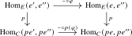
is a pullback square. Informally, this means that for every solid diagram of the form
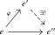
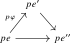
in \(E\) for which its image in \(C\) has been completed to a triangle, there exists a unique map \(e' \to e''\) that forms a commutative triangle in \(E\) and projects to the given one in \(C\).
- (2)
-
We say that \(p\) is a cocartesian fibration if for every morphism \(f\colon x \to y\) in \(C\) and every object \(e \in E_x\) there exists a \(p\)-cocartesian morphism \(\phi \colon e \to e'\) satisfying \(p(\phi ) = f\). We refer to such a morphism \(\phi \) as a \(p\)-cocartesian lift of \(f\).
- (3)
-
Let \(p\colon E \to C\) and \(p'\colon E' \to C\) be two cocartesian fibrations. A functor \(F\colon E \to E'\) over \(C\), i.e., a commutative triangle

is called cocartesian over \(C\) if it sends \(p\)-cocartesian morphisms in \(E\) to \(p'\)-cocartesian morphisms in \(E'\).
- (4)
-
If \(C\) is a small \(\infty \)-category, we denote by \[ \Cocart (C) \subseteq (\Cat _{\infty })_{/C} \] the non-full subcategory spanned by the cocartesian fibrations \(p\colon E \to C\) and the cocartesian functors between them.
The cocartesian lift \(\phi \colon e \to e'\) is functorial in the pair \((f,e)\). To show this, the following reformulation of \(p\)-cocartesian morphisms is useful:
Lemma 23.1.2. Let \(p\colon E \to C\) be a functor. Consider the functor \[ Q\colon \Ar (E) \longrightarrow \Ar (C) \times _{s,C,p} E, \qquad (\phi \colon e \to e') \longmapsto (p\phi ,e). \] An arrow \(\phi \colon e\to e'\) satisfying \(Q(\phi )=(f,e)\) is \(p\)-cocartesian if and only if, equipped with the identity map of \((f,e)\), it is a left adjoint object to \((f,e)\) under \(Q\).
Proof. Set \(B:=\Ar (C)\times _{s,C,p}E\). Since \(Q(\phi )=(f,e)\), the identity of \((f,e)\) exhibits \(\phi \) as a left adjoint object under \(Q\) if and only if, for every arrow \(\psi \colon a\to b\) in \(E\), the induced map \[ Q_*\colon \Hom _{\Ar (E)}(\phi ,\psi )\longrightarrow \Hom _B((f,e),Q(\psi )) \] is an equivalence. By Axiom D, Chapterexercise 1.4, its source and target admit canonical descriptions \begin {align*} \Hom _{\Ar (E)}(\phi ,\psi ) &\iso \Hom _E(e,a)\times _{\Hom _E(e,b)}\Hom _E(e',b), \\ \Hom _B((f,e),Q(\psi )) &\iso \Hom _E(e,a)\times _{\Hom _C(pe,pb)}\Hom _C(pe',pb). \end {align*}
Here the maps out of \(\Hom _E(e,a)\) are given by postcomposition with \(\psi \) in the first line and by postcomposition with \(p(\psi )\) after applying \(p\) in the second line. Under these identifications, \(Q_*\) is induced by \(p\colon \Hom _E(e',b)\to \Hom _C(pe',pb)\) on the second factor.
If \(\phi \) is \(p\)-cocartesian, then for every \(b\) the defining pullback square identifies \[ \Hom _E(e',b) \longrightarrow \Hom _E(e,b)\times _{\Hom _C(pe,pb)}\Hom _C(pe',pb) \] as an equivalence. Pulling this equivalence back along the postcomposition map \(\psi \circ -\colon \Hom _E(e,a)\to \Hom _E(e,b)\) shows that \(Q_*\) is an equivalence for every \(\psi \). Thus \(\phi \) is a left adjoint object under \(Q\).
Conversely, suppose that \(\phi \) is a left adjoint object under \(Q\). Taking \(\psi =\id _b\) identifies \(Q_*\) with the preceding comparison map. It is therefore an equivalence for every object \(b\) of \(E\), which says precisely that the squares defining \(p\)-cocartesianness of \(\phi \) are pullback squares. □
Notation 23.1.3. Given an object \(e \in E_x\), we may sometimes denote a cocartesian lift of \(f\colon x \to y\) by \(\phi \colon e \to f_!e\), and refer to \(f_!e\) as the cocartesian transport of \(e\) along \(f\). This is well-defined, since left adjoint objects are unique whenever they exist.
Proposition 23.1.4 (Functoriality of partial cocartesian lifts). Let \(p\colon E\to C\) be a functor, and let \(W\subseteq \Ar (C)\) be a subcategory. Suppose that for every \((f,e)\in W\times _{s,C,p}E\) there exists a \(p\)-cocartesian lift of \(f\) starting in \(e\). Then these lifts assemble into a functor \[ \lift _W\colon W\times _{s,C,p}E\longrightarrow \Ar (E) \] More precisely, this functor factors through \[ \Ar (E)\times _{\Ar (C)\times _{s,C,p}E} \bigl (W\times _{s,C,p}E\bigr ), \] and the resulting functor is left adjoint to the projection from this pullback to \(W\times _{s,C,p}E\).
Proof. By Lemma 23.1.2, the required cocartesian lifts are precisely the left adjoint objects under the restricted functor \[ \Ar (E)\times _{\Ar (C)\times _{s,C,p}E} \bigl (W\times _{s,C,p}E\bigr ) \longrightarrow W\times _{s,C,p}E. \] The claim is therefore an immediate consequence of the pointwise criterion for adjunctions from Lemma 21.1.4. □
Corollary 23.1.5. Let \(p\colon E \to C\) be a cocartesian fibration. Then the cocartesian lifts assemble into a left adjoint \[ \lift \colon \Ar (C) \times _{s, C, p} E \xrightarrow {\,\,\,} \Ar (E), \qquad (f,e) \mapsto (\phi \colon e \to f_!e) \] to the functor from Lemma 23.1.2.
Proof. Apply Proposition 23.1.4 with \(W=\Ar (C)\). □
Corollary 23.1.6. Let \(p\colon E \to C\) be a cocartesian fibration, and let \(f\colon x \to y\) be a morphism in \(C\). Then cocartesian transport assembles into a functor \(f_!\colon E_x \to E_y\).
Proof. We may obtain \(f_!\) by restricting the functor \(\lift \) from the previous corollary. □
We may also deduce the uniqueness of cocartesian lifts:
Lemma 23.1.7 (Uniqueness of cocartesian lifts). For a functor \(p\colon E \to C\), consider the full subcategory \[ \Ar ^{\textup {cocart}}(E) \subseteq \Ar (E) \] spanned by the \(p\)-cocartesian morphisms. The functor \[ \Ar ^{\textup {cocart}}(E) \to \Ar (C) \times _{s,C,p} E , \quad (\phi \colon e \to e') \mapsto (p\phi , e) \] is fully faithful. It is an equivalence if and only if \(p\) is a cocartesian fibration.
Proof. Set \(B:=\Ar (C)\times _{s,C,p}E\), and let \(B^{\mathrm {lift}}\subseteq B\) be the full subcategory spanned by the pairs \((f,e)\) that admit a cocartesian lift. By Lemma 23.1.2, Lemma 21.1.4, these lifts assemble into a left adjoint \[ L\colon B^{\mathrm {lift}}\longrightarrow \Ar (E)\times _B B^{\mathrm {lift}} \] to the projection. Its unit is an equivalence, so \(L\) is fully faithful. Its essential image is precisely \(\Ar ^{\textup {cocart}}(E)\), since the cocartesian arrows are exactly the left adjoint objects described in Lemma 23.1.2. Thus the displayed functor identifies with the inclusion \(B^{\mathrm {lift}}\hookrightarrow B\). It is therefore fully faithful, and it is an equivalence precisely when every pair \((f,e)\) admits a cocartesian lift. □
The definition of cocartesian fibrations may be dualized:
Definition 23.1.8. For a functor \(p\colon E \to C\), we say that a morphism \(\phi \colon e \to e'\) in \(E\) is \(p\)-cartesian if for every third object \(e''\) in \(E\) the commutative square
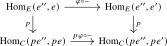
is a pullback square. We say \(p\) is a cartesian fibration if for every morphism \(f\colon x \to y\) and every \(e' \in E_y\) there exists a \(p\)-cartesian lift \(\phi \colon e \to e'\) of \(f\). We similarly obtain a notion of a cartesian functor over \(C\), and this leads to a (non-full) subcategory \[ \Cart (C) \subseteq (\Cat _{\infty })_{/C}. \]
Remark 23.1.9. Note that a functor \(p\colon E \to C\) is a cartesian fibration if and only if its opposite \(p\catop \colon E\catop \to C\catop \) is a cocartesian fibration. All properties about cocartesian fibrations have dual analogues for cartesian fibrations; we will generally not spell these out explicitly.
Let us go through a basic example of a (co)cartesian fibration to see these definitions in action:
Example 23.1.10. Let \(C\) be an \(\infty \)-category, let \(E := \Ar (C)\) be its arrow category, and consider the target functor \(p := t\colon \Ar (C) \to C\). An object of \(E\) is given by a morphism in \(C\), which for emphasis we will write vertically: \(\smash {\pvto {X}{Y}}\). A morphism \(\phi \colon \smash {\pvto {X}{Y}} \to \smash {\pvto {X'}{Y'}}\) in \(E\) is given by a commutative square in \(C\) of the form
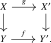
We claim:
- (1)
-
The morphism \(\phi \) in \(E\) is \(p\)-cocartesian if and only if \(g\) is an isomorphism. In particular, \(t\) is always a cocartesian fibration: given \(e = \pvto {X}{Y}\) and \(f \colon p(\pvto {X}{Y}) = Y \to Y'\) we may always form the square with \(X' := X\) and \(g = \id _X\).
- (2)
-
The morphism \(\phi \) in \(E\) is \(p\)-cartesian if and only if the square is a pullback square (a.k.a. a cartesian square). In particular, \(t\) is a cartesian fibration if and only if \(C\) admits pullbacks.
Indeed, claim (1) translates the defining universal property of a cocartesian morphism into the following lifting property: for every third object \(\smash {\pvto {X''}{Y''}}\) of \(E\) and every solid diagram below, there exists a unique dashed arrow making the diagram commute:
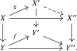
If \(g\) is an isomorphism, we may invert it and the dashed filler is unique. Conversely, if \(\phi \) is \(p\)-cocartesian, then by taking \(X'' = X\) we obtain a morphism \(g' \colon X' \to X\) satisfying \(g' g \cong \id _X\), and by taking \(X'' = X'\) we use uniqueness to obtain \(gg' \cong \id _{X'}\).
Similarly, claim (2) translates the defining universal property of a cartesian morphism into the existence of a unique dashed arrow in every solid diagram of the following form:
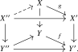
This is precisely the universal property of the original square being a pullback square. Passing to opposite categories shows dually that the source functor \(s\colon \Ar (C)\to C\) is always a cartesian fibration, and that it is also a cocartesian fibration if and only if \(C\) admits pushouts.
Example 23.1.11. The forgetful functor \(\mathrm {VectBund} \to \Top , (X,E) \mapsto X\) is a cartesian fibration. See Chapterexercise 23.1 for details.
Lemma 23.1.12. The following closure properties hold for cocartesian fibrations.
- (1)
-
If \(q\colon E\to D\) and \(p\colon D\to C\) are cocartesian fibrations, then \(pq\colon E\to C\) is a cocartesian fibration, and \(q\) is a cocartesian functor over \(C\).
- (2)
-
Consider a pullback square
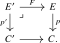
If \(p\) is a cocartesian fibration, then so is \(p'\), and a morphism in \(E'\) is \(p'\)-cocartesian if and only if its image under \(F\) is \(p\)-cocartesian.
Proof. For part (1), pick a cocartesian lift along \(p\) of a morphism in \(C\), and then a further cocartesian lift along \(q\). The two defining pullback squares paste to show that the resulting morphism in \(E\) is \(pq\)-cocartesian. This proves that \(pq\) is a cocartesian fibration. By Lemma 23.1.7, every \(pq\)-cocartesian lift is isomorphic to one constructed in this way, so \(q\) carries it to a \(p\)-cocartesian morphism.
For part (2), a \(p\)-cocartesian lift of the image in \(C\) of a morphism in \(C'\) determines a morphism in the pullback \(E'\). The universal property of the pullback identifies its defining cocartesian square with the base change of the corresponding square for \(p\), so this morphism is \(p'\)-cocartesian. Hence \(p'\) is a cocartesian fibration. The same argument proves that every morphism whose image under \(F\) is \(p\)-cocartesian is \(p'\)-cocartesian; the converse follows from uniqueness of cocartesian lifts. □
Lemma 23.1.13. The functor \(C \to *\) is both a cartesian and cocartesian fibration. Consequently, every projection functor \(\pr _D\colon C \times D \to D\) is both a cartesian and cocartesian fibration, and a morphism \((f\colon c \to c', g\colon d \to d')\) is \(\pr _D\)-cocartesian or \(\pr _D\)-cartesian if and only if \(f\) is an isomorphism.
Proof. The unique morphism in \(*\) has identity lifts. The assertion for \(\pr _D\) follows by pulling this fibration back along \(D\to *\). Using the product formula for hom animae in the defining pullback square, the cocartesian or cartesian condition reduces to requiring that precomposition or postcomposition with \(f\) induce equivalences on all hom animae of \(C\). By the Yoneda lemma, this holds if and only if \(f\) is invertible. □
Lemma 23.1.14 (Right cancellation of cocartesian morphisms). Let \(p\colon E \to C\) be a functor and let \(f\colon x \to y\) and \(g\colon y \to z\) be morphisms in \(E\) such that \(f\) is \(p\)-cocartesian. Then \(g\) is \(p\)-cocartesian if and only if \(gf\) is \(p\)-cocartesian.
Proof. For every other object \(w \in E\), we consider the following commutative diagram:
Since \(f\) is \(p\)-cocartesian, the right square is a pullback square. It follows from the pasting law for pullback squares that the left square is a pullback if and only if the outer square is a pullback. This proves the claim. □
Lemma 23.1.15. Let \(p\colon E \to C\) be a functor and let \(\phi \colon e \to e'\) be a \(p\)-cocartesian morphism. Then \(\phi \) is an isomorphism if and only if \(p(\phi )\) is an isomorphism.
Proof. Only the converse requires proof. Suppose that \(p(\phi )\) is invertible. Cocartesianness provides a morphism \(\psi \colon e'\to e\) over \(p(\phi )^{-1}\) satisfying \(\psi \phi \cong \id _e\). The morphisms \(\phi \psi \) and \(\id _{e'}\) have the same image in \(C\) and agree after precomposition with \(\phi \). The defining universal property of \(\phi \) therefore gives \(\phi \psi \cong \id _{e'}\), so \(\phi \) is invertible. □
23.1.1 Left and right fibrations
Proposition 23.1.16. Let \(p\colon E \to C\) be a cocartesian fibration. Then the following three conditions are equivalent:
- (1)
-
The functor \(p\) is conservative, i.e., a morphism \(f\) in \(E\) is an isomorphism as soon as \(p(f)\) is an isomorphism in \(C\);
- (2)
-
For each \(x \in C\), the fiber \(E_x := \{x\} \times _C E\) is an anima;
- (3)
-
Every morphism in \(E\) is \(p\)-cocartesian.
Proof. It is clear that (1) implies (2): every morphism in the fiber \(E_x\) is sent to the identity morphism \(\id _x\), hence is an isomorphism by conservativity of \(p\).
Assuming (2), consider a morphism \(\psi \colon e \to e''\) in \(E\). We need to show that \(\psi \) is \(p\)-cocartesian. Since \(p\) is a cocartesian fibration, there exists a \(p\)-cocartesian morphism \(\phi \colon e \to e'\) lifting \(p(\psi )\). Since \(\phi \) is \(p\)-cocartesian, there then exists a unique morphism \(\xi \colon e' \to e''\) fitting in the following commutative diagram lifting the degenerate one in \(C\):
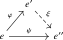
But then the morphism \(\xi \) lies in the fiber \(E_{pe''}\), which is an anima, so \(\xi \) is an isomorphism. In particular \(\xi \) is \(p\)-cocartesian, and hence so is \(\psi = \xi \circ \phi \).
Finally, assume that (3) holds, and consider a morphism \(\phi \colon e \to e'\) in \(E\) such that \(p\phi \) is invertible. We need to show that \(\phi \) is invertible. By assumption, there is an inverse \(g\colon pe' \to pe\) of \(p \phi \). We may then find a \(p\)-cocartesian lift \(\psi \colon e' \to e''\) of \(g\). But then \(\phi \circ \psi \) and \(\psi \circ \phi \) are cocartesian lifts of the respective identity maps on \(pe\) and \(pe'\). By uniqueness of cocartesian lifts (Lemma 23.1.7) these composites are isomorphisms. It follows that \(\phi \) is an isomorphism with inverse \(\psi \). □
Definition 23.1.17. A functor \(p\colon E \to C\) is called a left fibration if it is a cocartesian fibration satisfying the equivalent conditions (1), (2) and (3) from the proposition. This gives rise to a full subcategory \[ \LFib (C) \subseteq \Cocart (C). \] Note that \(\LFib (C)\) is also a full subcategory of \((\Cat _{\infty })_{/C}\) (in contrast to \(\Cocart (C)\)).
Dually, \(p\) is called a right fibration if it is a cartesian fibration which satisfies the equivalent conditions (1), (2) and (3’): Every morphism in \(E\) is cartesian. We write \(\RFib (C) \subseteq (\Cat _{\infty })_{/C}\) for the resulting full subcategory.
Proof. Follows from Lemma 23.1.12. □
Proposition 23.1.19. Let \(C\) be an \(\infty \)-category. For every object \(x \in C\), the functor \(t\colon C_{x/} \to C\) sending a morphism \(x \to y\) to its target \(y\) is a left fibration. Dually, the source functor \(s\colon C_{/x} \to C\) is a right fibration.
Proof. We prove the case for \(t\colon C_{x/} \to C\); the other case is dual. Consider a morphism in \(C_{x/}\), which takes the form of a commutative triangle
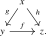
To show that this morphism is cocartesian with respect to the target functor \(t\colon C_{x/} \to C\), we have to show that for every third object \(x \to w\), the top square in the following commutative diagram is a pullback square:
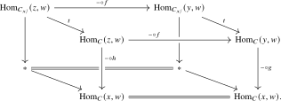
But this follows from the pasting law for pullback squares, since the bottom square and left/right faces are pullback squares. □
23.1.2 Adjunctions
Lemma 23.1.20. Let \(p\colon E \to C\) be a cocartesian fibration. Then the following conditions are equivalent:
- (1)
-
The functor \(p\) is also a cartesian fibration.
- (2)
-
For every morphism \(f\colon X \to Y\) in \(C\), the cocartesian transport functor \(f_!\colon E_X \to E_Y\) admits a right adjoint \(f^*\colon E_Y \to E_X\).
Proof. The cartesian lift of \(f\colon X\to Y\) ending at \(\widetilde {Y}\in E_Y\) is obtained by composing the cocartesian lift \(f^*\widetilde {Y}\to f_!f^*\widetilde {Y}\) with the counit \(f_!f^*\widetilde {Y}\to \widetilde {Y}\). The universal property, as well as the converse construction of the adjunction from cartesian lifts, is proved in Reference ? of [Cisinski et al. (2026)]. □
Corollary 23.1.21. Let \(F\colon C \to D\) be a functor between small \(\infty \)-categories, encoded by a morphism \([1] \to \Cat _{\infty }\). Let \(E \to [1]\) be the cocartesian unstraightening of this functor. Then \(F\) admits a right adjoint if and only if the cocartesian fibration \(E \to [1]\) is also a cartesian fibration. □
Generated from the authoritative LaTeX source.